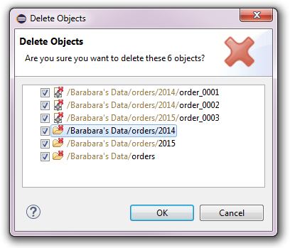
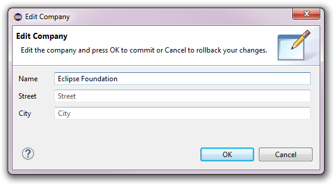
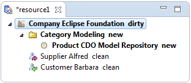

Working with Models and Model Elements


Working with Models and Model Elements |
|
All modifications of model elements that are triggered in the Project Explorer
(as opposed to being triggered in a model editor)
are performed in a separate background transaction, see Technical Background of Transactions for details.
Modifying model elements is only possible in checkouts that are not read-only, i.e., not in Online Historical Checkouts.
Table of Contents
New model elements can be created directly in the Project Explorer. The process is slightly different depending on whether the new model element is supposed to be created at the root of an existing model resource, in which case arbitrary element types are allowed, or whether it is supposed to be created under an existing typed model element, in which case the choice of element types is already determined by the type of the existing container element.
In any case, new model elements are created by selecting the container, i.e., a model resource or an existing model element that can have children, opening the context menu and opening the New sub menu. This sub menu looks different depending on the type of the container. It is explained in the following two sub sections.
See Also:
When creating new model elements directly under an existing model resource the New sub menu (see Creating Model Elements) looks as follows:
The first group of the New sub menu contains sub menus for all EPackage packages that are already used in the repository of the selected checkout. A package sub menu contains creation actions for all concrete EClass classes of that package.
The second group of the New sub menu contains the Other action, which, upon selection, will open the following dialog:
The New Root Object dialog is horizontally split. The left side shows all registered packages with the icons of not-yet-loaded packages being grayed out. The filter field on top of the package list can be used to narrow down the choice of packages. The right side shows all concrete classes of the package select on the left side. The filter field on top of the class list can be used to narrow down the choice of classes.
When a class is selected and OK is pressed an instance of that class is created and inserted at the root level of the containing model resource. Double-clicking the class has the same effect.
CDO supports the creation of multiple root elements in model resources, both in the Project Explorer Integration and Editing Model Elements in an Editor.
When creating new model elements under an existing model element the New sub menu (see Creating Model Elements) looks much simpler because the choice of element types is already determined by the type of the existing container element:
What element types are offered and how many instances of those types can be created under a given container element depends solely on the type of that container element.
Model elements can be moved within the resource tree of a checkout by using drag and drop.
When holding the Ctrl key while dropping model elements onto a checkout or a resource folder copies of the dragged model elements are created under the drop target.
Moving a model element to a different container does not break cross references to that model element or model elements that are contained by the moved model element.
Moving and copying model elements beyond the current checkout with the resource transfer framework
is not yet supported for checkouts.
Model elements can be deleted from their direct container (i.e., a model resource or a containing model element) by selecting the model element and pressing the Del key or opening the context menu and selecting the Delete action. The following confirmation dialog will pop up:

This confirmation dialog only shows the directly selected model elements. Nested model elements are not shown for performance reasons but will also be deleted if OK is pressed.
Deleting a model element can break cross references to that model element or model elements that are contained by the deleted model element!
A model element can be edited directly in the Project Explorer by double-clicking it or by selecting it and pressing the Enter key or opening the context menu and selecting the Open action. An EMF Forms dialog similar to the following will pop up:

See Also:
A model element can be edited in a registered model editor by double-clicking the containing
model resource of the model element or by selecting that resource and pressing
the Enter key or opening the context menu and selecting the Open action.
The effect of the Open action depends on the chosen editor. CDO's generic model editor, which is available for all model resources, looks similar to the following:

All registered model editors open their own, separate transaction, which is typically
committed when the editor is saved.
See Technical Background of Transactions for details on how transactions are typically used by editors.